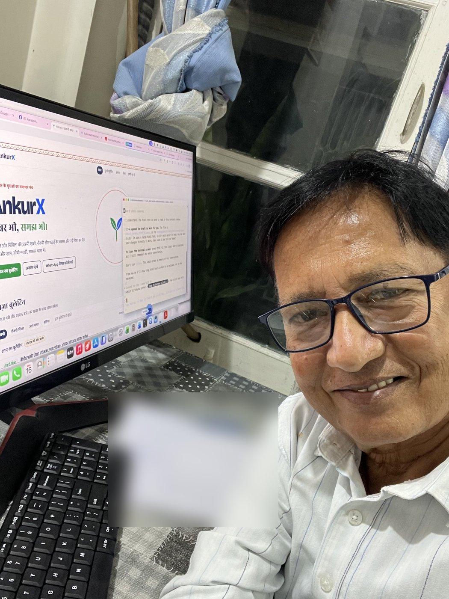

उम्र नहीं, जिज्ञासा चाहिए: AnkurX कैसे बना
नई चीज़ आज़माना, टेक्नोलॉजी के साथ खुद को ताज़ा रखना और नई खोजों को क़रीब से देखना मुझे हमेशा अच्छा लगता रहा है। धीरे-धीरे यही मेरी हॉबी बन गई।

कंप्यूटर से मेरी पहचान 1980 के दशक में हुई। उस समय से आज तक कंप्यूटर का जो विकास हुआ, उसे देखना और उसका उपयोग करना मुझे हमेशा रोमांचक लगा। फ़्लॉपी से इंटरनेट तक, और इंटरनेट से मोबाइल तक, हर दौर को मैंने अपने काम में उतारा।
इसी सफ़र में AI (आर्टिफ़िशियल इंटेलिजेंस) आया, और इसने मेरे प्रयोगों को एक नई दिशा दे दी। कई काम, जो मैं बरसों से करना चाहता था पर तकनीकी झंझट के कारण टल जाते थे, अब बहुत आसान होते जा रहे हैं। AnkurX उसी का एक नतीजा है।
एक विचार से एक हफ़्ते में
मैं चाहता था कि उत्तर बिहार के युवाओं के लिए एक ऐसा मंच हो, जहाँ खबर के साथ समझ भी मिले: नौकरी और पढ़ाई के सच्चे अवसर, जाँची-परखी खबरें, और नई सोच। नाम पर कई दिन सोचा। आख़िर में चुना "AnkurX: खबर भी, समझ भी।" अंकुर, यानी भीतर छिपी प्रतिभा का फूटना; और X, यानी नई सोच और नई तकनीक।
11 नवंबर 2026 को मैंने ankurx.in नाम का डोमेन ख़रीदा, और उसी दिन वेबसाइट इंटरनेट पर आ गई। अगले कुछ दिनों में फ़ेसबुक पेज, यूट्यूब चैनल, इंस्टाग्राम, X, लिंक्डइन और WhatsApp चैनल भी बन गए।
AI ने क्या किया, मैंने क्या किया
यहाँ ईमानदारी से बताना ज़रूरी है। दिशा, नियम, विषय और हर लेख की आत्मा मेरी है; क्या छपेगा और क्या नहीं, यह फ़ैसला मेरा है। AI ने वह तकनीकी काम संभाला जिसके लिए पहले प्रोग्रामर, डिज़ाइनर और संपादक की पूरी टीम चाहिए होती: वेबसाइट का कोड, डिज़ाइन, वीडियो की एडिटिंग, और ड्राफ़्ट तैयार करना। मैं बताता था कि क्या चाहिए, AI बनाकर दिखाता था, और मैं सुधार करवाता था।
सुबह-शाम का 'रोबोट रिपोर्टर'
AnkurX की सबसे मज़ेदार चीज़ है इसका बुलेटिन। हर सुबह और शाम एक स्वचालित प्रोग्राम उत्तर बिहार के नौ ज़िलों की ताज़ा खबरें भरोसेमंद अख़बारों और सरकारी स्रोतों से इकट्ठा करता है, सरल हिंदी में ड्राफ़्ट बनाता है और मुझे ईमेल कर देता है। मैं "OK" लिखता हूँ, या कोई खबर हटाने-बदलने को कहता हूँ, और बुलेटिन वेबसाइट पर छप जाता है। अपराध, दुर्घटना, सांप्रदायिक और राजनीतिक बयानबाज़ी वाली खबरें हम जानबूझकर नहीं लेते।
लेख और वीडियो
बुलेटिन के अलावा 'लेख' भी हैं: छठ पूजा पर, श्रीलंका यात्रा की डायरी, डॉ. एस. सिद्धार्थ का प्रतिभा परिचय, और 1960 के दशक का मच्छरों वाला 'एटम बम', जिसका वीडियो भी यूट्यूब पर है। इन्हें आप लोगों ने जिस प्यार से पढ़ा, वही सबसे बड़ी ख़ुशी है। मच्छर बम वाली पोस्ट फ़ेसबुक पर 500 से ज़्यादा बार देखी गई, और WhatsApp चैनल पर पहले ही दिन 20 लोग जुड़ गए।
युवाओं से एक बात
अगर मैं इस उम्र में यह कर सकता हूँ, तो आप भी कर सकते हैं। ज़रूरत किसी डिग्री या बड़े बजट की नहीं, बस जिज्ञासा और रोज़ थोड़ा-थोड़ा सीखने की है। AI से डरिए मत, उससे सवाल पूछिए, उससे काम करवाइए, पर फ़ैसला और ज़िम्मेदारी अपने हाथ में रखिए।
AnkurX पर मेरे प्रयोग जारी रहेंगे। अगली बार किसी और प्रयोग की कहानी लेकर आऊँगा।
लेख अच्छा लगा? पसंद करें और दोस्तों से शेयर करें: